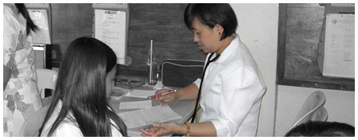
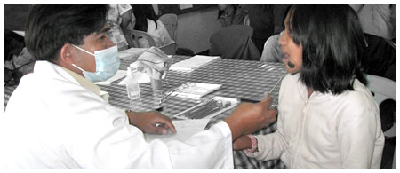

The school library is located at the second floor of the Multi-Purpose Building (main campus). It has 10,000 volumes of books covering all subject areas.
Also available are magazines (international and local) and daily newspapers (national and local). The library is open from 8:00 am to 5:00 pm with no snacks or lunch breaks from Mondays to Fridays. The BCNHS Library exists primarily as a reference facility to all students, teachers, and non-teaching personnel and other individuals as maybe authorized by the librarian. It should not be mistaken for and utilized as a source of textbooks for personal use. It is to this end that the regulations have been made to allow full utilization of the limited library materials by numbers of borrowers.
A.Mission
To provide library services and facilities to all students and personnel of BCNHS for information, recreation, education and research to boost their morale and maintain a high degree of efficiency.
B. Library Rules and Regulations
Anyone availing of the services of the BCNHS Library must:
a) Use personally the library card in borrowing and returning books. A library card is issued to each freshman at the beginning of the school year.
b) Observe silence at all times. Maintain acceptable low noise levels in all areas of the library.
c) Respect the rights of others. Refrain from inappropriate behavior (bullying, shouting, etc.) inside the library.
d) Maintain the cleanliness of the library. Avoid littering. Eating is not allowed inside the library.
e) Refrain from entering into the office of the librarian and in the stack room except when transacting an official business.
f) Maintain the layout of the library furniture, fittings or equipment. Ask permission from the Librarians if an alteration is needed.
*Violation in any of these rules is a sufficient ground for the suspension or cancellation of library privileges.
a) Home reading books maybe borrowed for one (1) week.
b) Other reference books maybe borrowed overnight.
c) Any borrower who fails to return the borrowed book on the due date shall be penalized of 1.00 per day.
d) Encyclopedias, dictionaries, newspapers, magazines and reserved books must be used only inside the library.
Note: Library privileges shall be suspended until the overdue book is returned and the corresponding fines are paid.
In borrowing a book, the following are helpful:
a) Consult the card catalog.
b) Fill a call slip. Present this to the Librarian.
c) If the book is available, present your library card. If the book is out, locate another book in the same field of study.
d) Fill up the book card inserted at the pocket in the inner back cover of the book.
If anybody loses a library material, he/she must report the incident immediately at the counter where the material is borrowed. Lost materials shall be replaced with the same title, author and edition (preferably the latest edition). If the library material is not available, it shall be replaced with one of the same subject or be paid with the original cost. Borrowed books that are destroyed beyond repair shall also be considered for replacement or be paid by the borrower.
In the conduct of research classes, a written request to the Librarian and a reservation must be made at least one (1) day before the scheduled research class. This is to limit the number of research classes held in the library to only one class per period. This is on first come first serve basis.
Upon transfer, separation, discharge, resignation or suspension from BCNHS of any bonafide borrower, he/she shall clear himself/herself of any library obligations.
Staff
Physician – 1
Nurses – 5
Dental Aid – 1
Division of Duties:
-Physician, dentist and dental aide man the main clinics and rove to the annexes three times a week.
Nurses: 2 will man the main clinic (scheduled duty per week)
3 man the 10 annexes and report to the main only on their scheduled main clinics duties
Each of the nurses handle 1 or more annexes and 3 of them handle year level each (2nd-4th years)Physician handles the 1st year.
Medical Services
Health Services
A. Students
1. Routine medical inspection and cardiopulmonary examination to include the height and weight measurements to the entire student population.
2. Daily medical consultations of acute ailments, treatment of frank cases and follow-up.
3. Respond to emergency calls when summoned to asses cases prior to delivery to the school clinic or hospital.
4. Referral or emergency cases to hospitals after first aid/medical intervention had been made/given.
5. Examination to student going to seminars, conferences, athletic meets and for camping/scouting and scholarship purposes.
6. Environmental survey and inspection of classrooms, toilets and canteens (food handler’s laboratory work-ups, certification and sanitary permits).
7. Deliver medical updates, lectures and information regarding prevailing diseases and impact preventive measures against such diseases.
8. Give post lectures regarding the common findings noted during the medical inspection and cardiopulmonary examination.
B. Teachers/non teaching personnel
1. Annual medical check-up of all personnel.
2. Referral of cases to specialist if special cases need immediate medical attention.
3. Daily medical consultation.
4. Examination of teachers going to conferences/seminars, trainings and scholarship programs.
5. Delivery for medical updates regarding common ailments among the personnel and other related topics for information dissemination purpose.
Dental Services
-Dental services extended to currently enrolled students, and to all teaching and non-teaching personnel of both main and annexes of Baguio City National High School (BCNHS).
1. Routine oral inspections
2. Daily dental consultation including chair side instructions.
3. Dental health lecture per classroom.
4. Immediate attention and treatment for dental emergency cases like acute pulpitis, periodontal problems, and other oral problems.
5. Oral examination of students recommended for seminars, conferences, scholarship grants, and students who are athletes.
6. Referral of patients with cases like orthodontic problems, periodontal problems, endodontic problems and prosthodontic problems.
7. Provided current dental information gathered from recent dental related materials.
8. Render tooth extractions and filling.
9. Render oral prophylaxis.
1. The office is open from 8 am to 12 noon, 1 pm to 5 pm, Monday to Friday.
2. For transferees to other schools, a request letter from requesting school is necessary to claim a copy of your FORM 137 or Student’s Permanent Record.
3. The client can also request a copy of the FORM 137 for reference purposes, i.e. abroad, passport, late registration, etc. In securing a second copy of FORM 138 or Report Card, a clearance should be accomplished.
4. Students requesting for Certificate of Enrollment (for DSWD, Scholarship, and Bank Transaction purposes) should present a letter or note that he/she is enrolled in this school.
5. A student whose form 137 has already been forwarded to a college or university can no longer be issued a second copy of form 138 or Report Card until a clearance from the college or university is accomplished.
6. Other requests that can be secured in the Records Office are: Certificate of Graduation, Certificate of Enrolment, Certificate of English as Medium of Instruction, Certificate of Translation, Certificate of Summer Grade and Good Moral Certificate.
7. Those who have a discrepancy in their name, place of birth, date of birth in the F137 should submit a photo copy of the NSO copy of their Birth Certificate.
8. The Good Moral Certificate is issued by the Guidance Office for currently enrolled students.
9. For easy retrieval of school records please know your year of graduation or last school year attended at our school.
10. To request for a second copy of your diploma, you need to submit first an Affidavit of Loss from the Public Attorney’s Office (PAO). For representatives, please go to a private attorney to request for an Affidavit of Loss. A payment of Php100 (to be paid in the Cashier’s Office) is also needed.
11. Requirements for authentication of school records (for red ribbon):
-2 Photo copies of Student Permanent Records (F 137-A) and Diploma duly certified by the School Head or his duly authorized representative.
-Certification of Graduation issued by School Head
-2 Copies – I.D. Picture (Passport Size, White Background)
-2 photo copies Student Permanent Records (Form 137-A) duly certified by the school Principal/authorized representative.
-Certification of grade/year level completed
-2 Copies – Passport Size I.D. Picture
Applicants get their authenticated documents at the:
AUTHENTICATION DIVISION
Department of Foreign Affairs
2330 Roxas Blvd., Pasay City 1300
*After Five (5) working days*
An integral part of the education system of Baguio City National High School (BCNHS) is the guidance program which aims to provide service geared towards developing the wholesome personality of the students to enable them to be well adjusted and to be oriented with the environment where they live and career they intend to pursue.
A. Multi-Cultural Counseling Service
Process of helping the learners achieve optimum growth and development as persons capable of self-direction, sound decision– making and self-understanding, (Individual and group sessions).
B. Referral Service
Seeks assistance from agencies, organizations or individuals regarding special cases/needs of clients/learners; and school referral system (teacher/adviser to counselor).
C. Extension or Community Services
Assists in providing appropriate training and evaluation to student counselors and peer facilitators; and serves as facilitator/speaker to seminars/trainings/workshops for students, teachers and non-teaching personnel.
D. Intervention Programs
Conducts group dynamic activities/homeroom guidance, enhancement programs, annex visitations; and supports the following school programs: EASE (Effective Alternative Secondary Education), OHSP (Open High School Program) & other Drop-Out Reduction Programs.
E. Sponsorship Programs
Assists individuals and groups who would like to provide high school financial assistance/scholarship grants, free lunch/meal, school supplies and old/new uniforms for indigent or financially challenged learners.
F. Information Service<
Gives a continuous program about opportunities for education and important facts concerning personal and social issues; and provides information necessary to guide the learners in making intelligent vocational or educational choices through various means such as bulletin boards, posters, flyers, hand-outs, brochures, individual and group/class sessions or consultations.
G. Career Guidance Service
Coordinates the conduct of Career Pathing, Career Fair, Vocation and Career Talks; and disseminates information on Alternative Learning Systems and Placement Tests.
H. Testing Service
Helps coordinate the conduct of school admission/entrance examinations, division, regional and national examinations, college entrance & scholarship examinations; and assists/supervise test administration, interpretation and release of results.
I. Follow-up Service
Follow-up results of testing, placement progress of counseling cases and other services rendered.
J. Individual Inventory Service
Aims to gather all reliable data, information and records and to compile these materials for their functional use (learners’ profile/Counselees’ Profile).
K. Research & Evaluation
Measures the effectiveness of the guidance program and the people involved and explores some changes to ascertain the needs of the learners.
Also available are magazines (international and local) and daily newspapers (national and local). The library is open from 8:00 am to 5:00 pm with no snacks or lunch breaks from Mondays to Fridays. The BCNHS Library exists primarily as a reference facility to all students, teachers, and non-teaching personnel and other individuals as maybe authorized by the librarian. It should not be mistaken for and utilized as a source of textbooks for personal use. It is to this end that the regulations have been made to allow full utilization of the limited library materials by numbers of borrowers.
A.Mission
To provide library services and facilities to all students and personnel of BCNHS for information, recreation, education and research to boost their morale and maintain a high degree of efficiency.